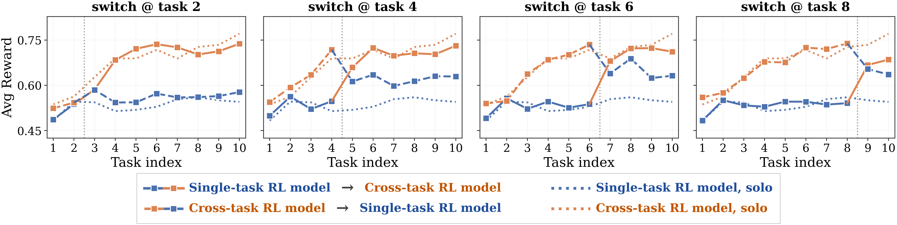
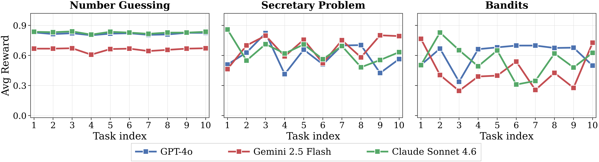
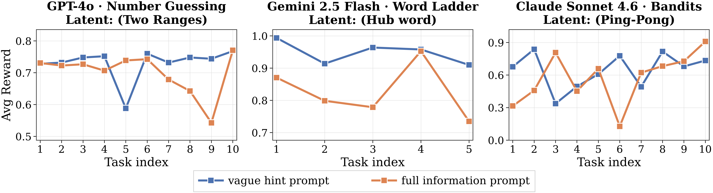
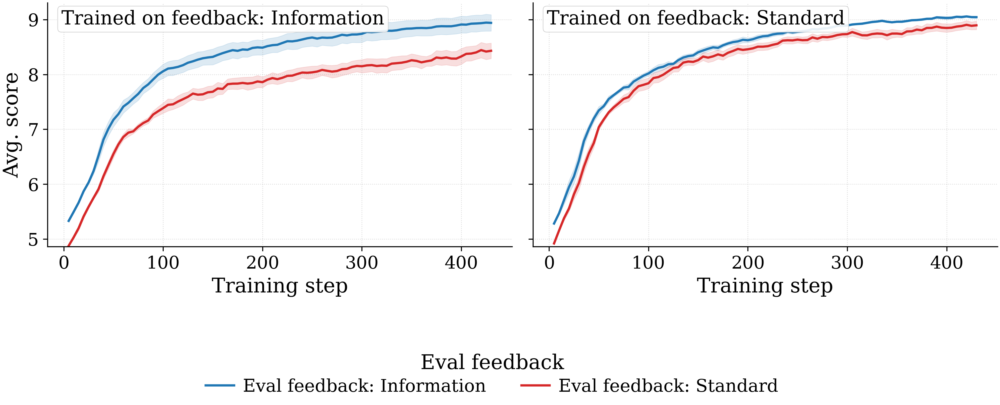
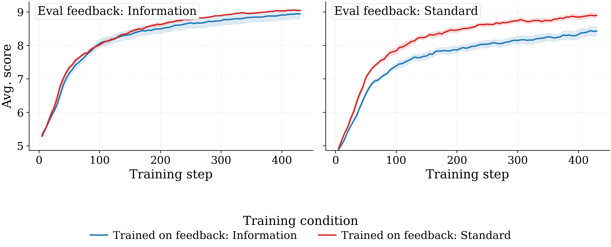
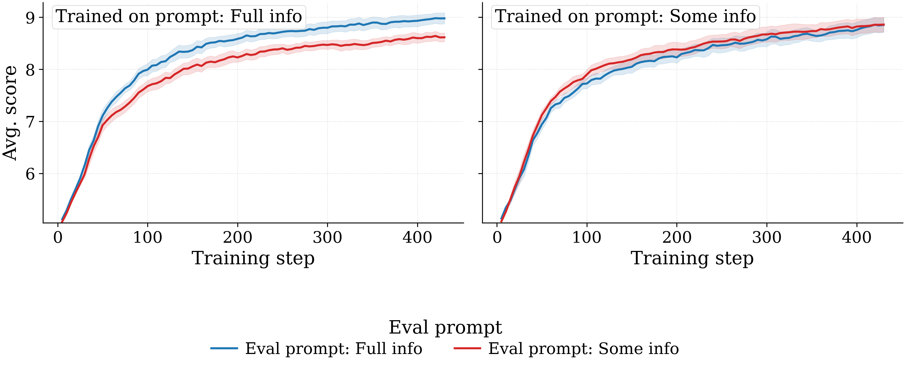
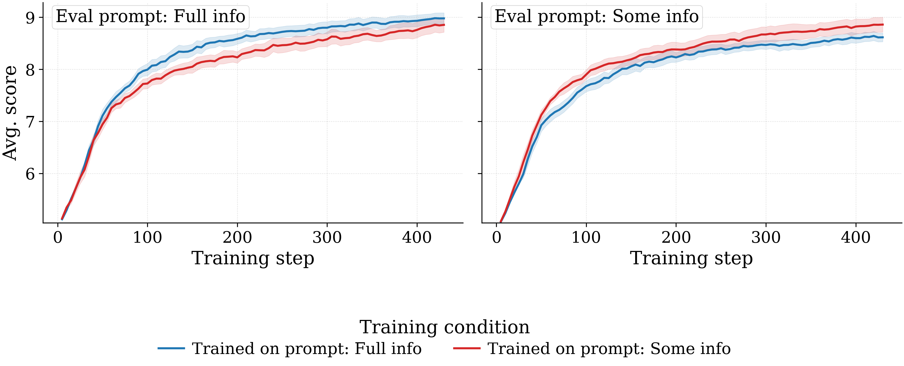

A testbed with controllable latent structure
LLM agents are increasingly deployed in settings where they handle sequences of related tasks: personalization, customer support, ongoing research assistants. The hidden structure shared across these tasks could be reused to improve later performance, yet whether current LLMs can actually leverage earlier experience to do better on later tasks is poorly understood.
We introduce LatentGym, a testbed where every environment is built around an explicit, ground-truth latent that defines the structure shared across a sequence of tasks. Because the latent is known to the evaluator, we can pinpoint where an agent succeeds or fails: in evidence-gathering, in latent identification, or in acting on identified structure.
Exploration & Exploitation Efficiency
z = {137, 793}. Early on (Task 1) the agent does binary search and takes 9 turns. By Task 10, having seen 137 and 793 recur, it solves the task in 1 turn. Each environment in LatentGym factorizes along axes (task dynamics, prompt behavior, feedback type, horizon); we evaluate via new exploration/exploitation metrics and train with Cross-Task RL.
Framework
Three pieces that make cross-task experiential learning studyable in isolation.
Software composition & extensibility
Every environment is a handful of small modules: a core decision problem, a latent family, prompt templates, and a feedback handler. Compose them to define any environment you want, and plug in a new latent or feedback regime without touching anything else.
Diagnosing how agents adapt
Two ingredients of cross-task learning, exploration efficiency (does behavior gather information about the latent?) and exploitation efficiency (does it act on it?), measured by handing the cross-task history from one agent to another partway through the sequence.
Instantiating: seven environments
We instantiate LatentGym with seven environments built on TextArena: Number Guessing, Bandits, Secretary, Mastermind, Word Ladder, Wordle, and Hangman, each with a family of controllable latents at multiple difficulty tiers.
Findings
Three empirical studies enabled by LatentGym.
Frontier models fail to adapt
Claude Sonnet 4.6, GPT-4o, and Gemini 2.5 Flash exhibit three failure modes (adaptation neglect, breakdown, miscalibration) even under simple latents.
Cross-Task RL induces adaptation
GRPO over full sequences improves cumulative reward by +99% over the base model and +39% over single-task RL, generalizing to held-out latents (+55%) and environments (+14%).
Sparser feedback transfers better
Counterintuitively, training under standard (binary) feedback transfers more robustly across deployment conditions than richer feedback, driven by robustness to the eval-feedback shift rather than faster learning.
Cite this work
Composability and Extensibility
A fully-specified environment is the product of five modular, swappable components, not hard-coded options inside a monolithic environment. Change one axis without touching the others.
Five design axes
Each component registers itself; the registry resolves any choice into a single runnable environment.
Core environment
The within-task game: states, actions, reward in isolation.
Latent
The ground truth shared across all tasks in a sequence: the object of adaptation.
Prompt
How much of the latent the agent is told up front; sets the prior.
Feedback
What the agent observes between tasks; controls how fast evidence accumulates.
Horizon N
How many tasks the sequence runs, setting how much support the agent has for adaptation.
= core-env × latent × prompt × feedback × N
Features
Each axis changes independently
The registry resolves any combination into one runnable env, named by an identifier that records the choice (e.g. number-guessing / set-of-3 / no-info / standard / ep10).
Built for evaluation and training
One environment object serves both evaluation and training. A thin adapter exposes each LatentGym env to SkyRL, which handles rollouts, weight sync, and policy optimization; built-in advantage estimators plug into the trainer.
Adding a new environment
Write the single-task dynamics plus the registrations. Latents, prompts, and feedbacks live in their own files and register on import. Sequence generation, evaluation, and stream-level RL are inherited.
Mix-and-match across a sequence
A single sequence can even draw on a different core environment for each task while sharing one latent.
Difficulty axes
Example settings shown for Number Guessing.
Within-task
[1, 100]
[1, 1000]
[1, 10000]
Latent-identification
|z| = 2
|z| = 5
|z| = 10
Cross-task
|z|=2 in [1,1000]
vs
|z|=10 in [1,100]
Prompt and feedback conditions
Two orthogonal axes that modulate how much support the agent gets for inferring and exploiting the latent.
| Prompt | What's revealed | What it tests |
|---|---|---|
no_info | Nothing about cross-task structure. | Does the agent discover structure on its own? |
some_info | A vague hint that recurring structure may exist. | Does it identify the regularity efficiently? |
full_info | An explicit description of the latent. | Can it use latent information when given? |
| Feedback | What's revealed between tasks | What it tests |
|---|---|---|
standard | Only a binary success/failure signal after each task. | Can the agent learn from sparse, realistic feedback? |
information | Ground-truth outcome revealed regardless of success. | Does it improve once evidence accumulates faster? |
Diagnosing how an agent adapts
The reward curve r1, …, rN tells us whether an agent improved. It does not tell us how. Two agents with the same cumulative reward can differ sharply in whether they probe the latent or exploit what they already know, and the two failures call for different fixes.
What standard summaries tell us
Three views on the reward curve r1, …, rN. Each says whether the agent got better, not how.
Cumulative reward R = Σi ri
Uniform competence across the whole sequence. The reward we optimize during Cross-Task RL.
Cross-task gain rN − r1
Directly isolates whether the agent gets better with experience.
Final-task reward rN
Final capability after the agent has had the whole sequence to adapt.
Separating exploration and exploitation
An agent's tail reward depends on two things at once: how well it probes the hidden latent (exploration), and how well it acts on what it has learned (exploitation). We separate them with a two-agents experiment: one agent plays tasks 1…K and builds the cross-task history; a different agent then inherits that running context and plays K+1…N. By swapping who plays which half, any change in the tail reward can be attributed cleanly to either the explorer or the exploiter alone.
Exploration efficiency
Exploitation efficiency
An Example: Cross-Task RL vs Single-Task RL (Number Guessing)
Each cell is the relative tail-reward advantage of the Cross-task RL agent (CT) over the Single-task RL agent (ST) at switch point K. ExploreGainC holds the exploiter fixed at the reference agent C and swaps the explorer. ExploitGainC holds the explorer fixed at C and swaps the exploiter. We report both choices C ∈ {CT, ST} so you can see the gap is robust to the held-fixed role. All values positive: CT is both a better explorer and a better exploiter than ST.
| Switch point K | Reference C | ExploreGainC | ExploitGainC |
|---|---|---|---|
| 2 | C = CT | +0.7% | +25.3% |
| C = ST | +4.4% | +30.1% | |
| 4 | C = CT | +2.5% | +16.4% |
| C = ST | +14.2% | +29.5% | |
| 6 | C = CT | +2.9% | +13.0% |
| C = ST | +16.9% | +28.5% | |
| 8 | C = CT | +11.6% | +16.3% |
| C = ST | +17.4% | +22.7% |

Instantiating with seven environments
Built on TextArena, each environment is a sequence of games drawn from a shared latent. Click any latent to stream a recorded trajectory.
Failure Modes of Frontier Models
A controlled testbed is only useful if existing models struggle on it. We evaluate three representative frontier models (GPT-4o, Claude Sonnet 4.6, and Gemini 2.5 Flash) chosen to span providers and capability profiles. Even under simple latents and across prompt conditions, these models fail at cross-task adaptation; inspecting individual trajectories surfaces three recurring failure modes.
Adaptation neglect (models restart from scratch on every task)
When models are not explicitly told that a hidden pattern exists, they solve each task largely independently, without attempting to infer reusable structure from previous experience. This appears across environments and even under very simple latents. The behavior may look reasonable in isolation (an instructed agent should not impose hidden assumptions), but real deployments contain recurring regularities that are not specified, and an agent that only acts on explicitly stated structure cannot improve with experience.
Example trajectories
▶ Claude Sonnet 4.6 · Number Guessing (set_of_3) ▶ GPT-4o · Number Guessing (set_of_3) ▶ Gemini 2.5 Flash · Secretary (threshold_06) ▶ Browse all Adaptation neglect trajectories →
no_info across Number Guessing, Secretary, and Bandits: no improvement with experience.Adaptation breakdown (model sees the pattern but fails to act on it)
When the prompt hints that some pattern may exist, models show partial but ineffective adaptation. Sometimes they ignore the hint and act myopically; sometimes they search for a pattern but identify the wrong one; sometimes they correctly infer part of the structure but never act on it; sometimes they overfit a pattern and drift away from the original task. Recognizing latent structure and exploiting it turn out to be separable capabilities: models can partially succeed at one while failing at the other.
Example trajectories
▶ Gemini 2.5 Flash · Number Guessing (dynamic_range) ▶ Claude Sonnet 4.6 · Number Guessing (two_ranges) ▶ GPT-4o · Mastermind (consecutive) ▶ Browse all Adaptation breakdown trajectories →Task 10, Agent: I've reviewed the previous nine games. The numbers, ranging from 1461 to 2278, are well below the upper bound of 10365, although I'll continue using binary search… [5365] …12 more turns
Adaptation miscalibration (more information can make performance worse)
Even when the relevant pattern is described explicitly, performance can degrade relative to a vaguer prompt. The explicit description introduces a competing sub-goal: instead of treating the latent as a calibrated prior, the model optimizes for demonstrating the stated pattern, over-applying the rule or choosing actions that satisfy its interpretation while violating the game's operational constraints. Examples include proposing off-graph words in Word Ladder, choosing the wrong sub-range in Number Guessing, committing to a single arm in alternating Bandits, and accepting too early in Secretary. In-context adaptation requires not just the right information, but the right calibration on it.
Example trajectories
▶ Claude Sonnet 4.6 · Bandits (ping_pong) ▶ GPT-4o · Word Ladder (hub_word_3letter) ▶ Gemini 2.5 Flash · Number Guessing (set_of_2) ▶ Browse all Adaptation miscalibration trajectories →
full_info) can hurt relative to a vaguer prompt, across Number Guessing, Word Ladder, and Bandits.Cross-Task RL
Can RL fine-tuning instill general cross-task experiential learning? We compare two recipes on Qwen3-8B: single-task RL, whose reward depends on a single task r; and cross-task RL, whose reward depends on the full sequence r1, …, rN (we use R = Σi ri), training the policy to use early tasks to infer the latent and act better on later ones.
Three questions we address
Q1 · Cross-task RL is necessary
Cross-task RL leads on every environment, beating the base by an average of +99% and single-task RL by +39% on cumulative reward. It is the only variant with consistently positive Gain across environments; single-task RL is negative on 5 of 6 environments, indistinguishable from the base. Largest single-environment lifts on Wordle (+91% vs single-task) and Number Guessing (+72%).
Training across multiple environments helps further
A single cross-task model trained on a mixture of environments beats the per-environment cross-task models by an average of +19% on cumulative reward (largest gain on Secretary, +33%). Suggests cross-task RL learns a general adaptation strategy rather than environment-specific cues.
Compare the same task solved by different Qwen3-8B variants. Cross-task RL needs fewer turns and uses the cross-task history; single-task RL improves the per-task ability but does not adapt across the sequence.
Q2 · Strategies generalize beyond the training distribution
A policy with a transferable adaptation strategy should generalize to held-out latents within trained environments (OOD-1) and to entirely held-out environments (OOD-2). Cross-task RL beats the base by an average of +55% on OOD-1 and +14% on OOD-2, and lifts rN in almost every OOD case despite not being directly trained on it.
Latent shift (OOD-1)
Environment shift (OOD-2, leave-one-out)
Q3 · Where does the lift come from?
To attribute Cross-Task RL's gain cleanly to either exploration or exploitation, we use the two-agents hand-off experiment defined on the diagnostics page. The numbers reported there isolate exploration efficiency and exploitation efficiency for CT vs ST on Number Guessing.
How training conditions shape generalization
To show the kind of question LatentGym makes answerable, we ask how the in-context feedback and prompt used at training time affect generalization. We train Qwen3-8B under all combinations of {full-info, some-info} training prompt × {standard, information} training feedback, holding the cumulative-reward objective fixed, and evaluate each across all four prompt × feedback eval combinations.
Two findings
- Standard feedback at training time outperforms full feedback under both prompt regimes, despite providing strictly less information between tasks. The advantage comes from robustness to the eval-feedback shift: full-feedback-trained models drop by 0.509 points when the eval feedback switches to standard; standard-feedback-trained models hold up.
- Prompt richness produces no substantive difference in aggregate, but with an asymmetry. Full-info-trained models score +0.36 higher on full-info eval than on some-info eval, whereas some-info-trained models are essentially indifferent to the eval prompt. Some-info training thus yields a more uniformly transferable model, at the cost of the in-distribution advantage full-info training enjoys on full-info eval.
Effect of training feedback
Two views of the same sweep. Left: per training feedback, lines = eval feedbacks. Right: per eval feedback, lines = training feedbacks. Standard-feedback training transfers more robustly.


Effect of training prompt
Same two-view layout. Left: per training prompt, lines = eval prompts. Right: per eval prompt, lines = training prompts. Full-info-trained models lead on full-info eval; some-info-trained models are nearly flat across eval prompts.


Trajectory explorer
Three modes for browsing recorded trajectories. Frontier models: pick a frontier agent and a task and watch it play. Failure modes: jump directly to trajectories that illustrate Adaptation neglect, breakdown, or miscalibration. RL variants: place any two of the Qwen3-8B variants (Base / Single-task RL / Cross-task RL) side by side.